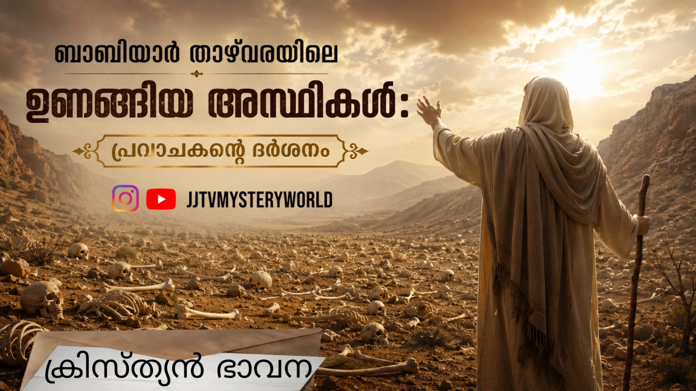

ഉണങ്ങിയ അസ്ഥികളാൽ ചുറ്റപ്പെട്ട ഒരു താഴ്വരയുടെ നടുവിൽ പെട്ടെന്ന് ദൈവം തന്നെക്കൊണ്ടു നിർത്തിയതായി യെഹെസ്കേൽ പ്രവാചകന് അനുഭവപ്പെട്ടു. ചുറ്റും അതിക്രൂരമായ കാഴ്ചകൾ; രക്തം മണക്കുന്ന ഇളംകാറ്റ്. ലോകം കാണാൻ പോകുന്ന നരകയാതനയെ ആത്മാവിൽ ദർശിച്ച യെഹെസ്കേൽ ഹൃദയഭാരത്താൽ നെടുവീർപ്പിട്ടു.
യെഹെസ്കേൽ ആത്മാവിൽ കണ്ടത് 1941 സെപ്റ്റംബർ 29-ന് ബാബിയാർ താഴ്വരയിൽ നടക്കുവാൻ പോകുന്ന ഹൃദയഭേദകമായ ഒരു കാഴ്ചയായിരുന്നു. ഇതാ ദൈവജനത്തിന്റെ കൂട്ടനിലവിളികൾ ഉയരുന്നു! പ്രവാചകൻ ആ താഴ്വരയിലാകെ ഒന്നു കണ്ണോടിച്ചു; പുരുഷന്മാർ മരണത്തെ മുഖാമുഖം കണ്ടുകൊണ്ട് മൗനമായി നിൽക്കുന്നു. ഗർഭിണികളായ സ്ത്രീകൾ അലമുറയിട്ട് കരയുന്നു. ചില അമ്മമാർ പിഞ്ചുമക്കളോടുകൂടി വന്ന് പട്ടാള ഉദ്യോഗസ്ഥരുടെ കാലുകളിൽ വീണു കരഞ്ഞപേക്ഷിക്കുന്നു. തങ്ങളുടെ മാതാപിതാക്കളുടെ മരണം നേരിൽ കണ്ട് ഭയന്നുവിറച്ച കുട്ടികൾ ബോധരഹിതരായി വീഴുന്നു. ഭയപ്പെടുത്തുന്നൊരു മുഖഭാവമായിരുന്നു ബാബിയാർ താഴ്വരയ്ക്ക്. പക്ഷികൾ കൂടുകൾ വിട്ടു പറന്നകന്നു, മരങ്ങൾ ജീവനില്ലാത്തതുപോലെ നിശ്ചലമായി, നഷ്ടബോധത്താൽ ഭൂമി രക്തത്തിൽ കുളിച്ചു നിന്നു.
ചിന്തകളെയും കാഴ്ചകളെയും മരവിപ്പിക്കുംവിധം, മെഷീൻ ഗണ്ണുമായി കടന്നുവന്ന ഒരു പട്ടാളക്കാരൻ യഹൂദന്മാരെ വരിവരിയായി നിർത്തി നിറയൊഴിക്കുന്നു. മനുഷ്യർ വെടിയേറ്റു വീഴുന്നു; മരിക്കാത്തവരെ കടിച്ചുകീറുവാൻ രക്തദാഹികളായ നായ്ക്കളെ അഴിച്ചുവിട്ടിരിക്കുന്നു! ഭയചകിതരായി നോക്കിനിൽക്കുന്ന സ്ത്രീകളും കുട്ടികളും. മൃതദേഹങ്ങൾ കൂട്ടംകൂട്ടമായി വീണുകൊണ്ടേയിരുന്നു. ബാബിയാർ താഴ്വരയിൽ എങ്ങും ഹൃദയം പിളർക്കുന്ന നിലവിളികളും കൂട്ടക്കരച്ചിലുകളും മാത്രം. പറവകൾ ഉപേക്ഷിച്ചുപോയ മരങ്ങൾ ഈ കൊടുംക്രൂരതയ്ക്ക് മൂകസാക്ഷിയായി തകർന്നുനിൽക്കുന്നു.
ഒരു स्त्री പട്ടാള മേധാവിയുടെ കാലുകളിൽ കെട്ടിപ്പിടിച്ചുകിടന്നു നിലവിളിക്കുകയാണ്. ഈറനണിഞ്ഞ മിഴികളോടെ അയാളുടെ മുഖത്തേക്ക് നോക്കി അവൾ യാചിച്ചു: “യജമാനനേ, എന്റെ മകളെ കൊല്ലരുതേ... അവൾക്ക് ഒന്നുമറിയില്ല. യെഹൂദന്മാരെ സംരക്ഷിക്കാൻ ഭവനം തുറന്നുകൊടുത്തത് ഞാനല്ലേ? എന്നെ കൊന്നോളൂ. പക്ഷെ, അവൾ ജീവിക്കട്ടെ... ഈ ലോകം എന്താണെന്ന് അവളൊന്ന് കണ്ടോട്ടെ.” അവൾ വീണ്ടും നിലവിളിച്ചു പറഞ്ഞു: “യജമാനനേ, അവളെ കൊല്ലരുതേ...” എന്നാൽ ആ പട്ടാള മേധാവിയുടെ മുഖത്ത് ഒരു ഭാവമാറ്റവുമുണ്ടായില്ല. അയാൾ ആ അമ്മയുടെ ശിരസ്സിലേക്ക് നിറയൊഴിച്ചു. ശേഷം, ആ പൈതലിനുനേരെ അയാൾ തോക്കുചൂണ്ടി. വിറങ്ങലിച്ച ശരീരത്തോടെ എന്തുചെയ്യണമെന്നറിയാതെ നിന്ന അവളുടെ നേർക്കും അയാൾ കാഞ്ചി വലിച്ചു. താഴ്വരയെ നടുക്കിക്കൊണ്ട് ആ പൈതലിന്റെ അവസാനത്തെ ദീനരോദനം അവിടെ മുഴങ്ങി...
ബാബിയാർ താഴ്വര മനുഷ്യശരീരങ്ങളാൽ നിറഞ്ഞു. ഏതൊരു മനുഷ്യന്റെയും മനസ്സിനെ തകർക്കുന്ന നിഷ്ഠൂരമായ കാഴ്ച. കഴുകന്മാർ മൃതദേഹങ്ങൾക്ക് മുകളിലൂടെ വട്ടമിട്ടു പറക്കുന്നു, നായ്ക്കൾ ഓരിയിടുന്ന ശബ്ദം അങ്ങിങ്ങായി കേക്കാം. അല്പം കഴിഞ്ഞ് മനുഷ്യരെ കുത്തിനിറച്ച അടുത്ത ട്രക്ക് അവിടെയെത്തി. ആവേശത്തോടെ ഒരു ഉദ്യോഗസ്ഥൻ വാതിലുകൾ തുറന്ന് ആളുകളെ പുറത്തിറക്കി വരിവരിയായി നിർത്തി. മറ്റൊരു പട്ടാളക്കാരൻ, രക്തം പുരണ്ട കൈകളോടെ ഇനിയും കൊല്ലുവാനുള്ള ആർത്തിയുമായി യെഹൂദന്മാരുടെ അടുത്തേക്ക് വന്നു. കൂട്ടത്തിൽ വളരെ അവശനായ ഒരു മധ്യവയസ്കനെ പിടിച്ച് തന്റെ ബൂട്ട് തുടയ്ക്കുവാൻ അയാൾ കൽപ്പിച്ചു. നിസ്സഹായനായ അദ്ദേഹം അതുപോലെ ചെയ്തു. എന്നാൽ ക്രൂരതയും ധാർഷ്ട്യവും നിറഞ്ഞ ആ പട്ടാളക്കാരൻ തന്റെ വലതുകാലുയർത്തി ആ മധ്യവയസ്കന്റെ തലയിൽ ശക്തിയായി ചവിട്ടി ഭൂമിയിലേക്ക് അമർത്തി രസിച്ചു. ഒന്നുറക്കെ നിലവിളിക്കാൻ പോലും ത്രാണിയില്ലാത്ത മനുഷ്യരായിരുന്നു അവിടെയുണ്ടായിരുന്നവരെല്ലാം. കാരണം അവർ ആഹാരം കഴിച്ചിട്ട് ദിവസങ്ങളായിരുന്നു. ട്രെയിനിലെ അതിക്രൂരമായ യാതനകൾക്കുശേഷമാണ് അവരെ കൊലക്കളമായ ഇവിടേക്ക് കൊണ്ടുവന്നത്.
ഇതെല്ലാം കണ്ട് ഹൃദയഭാരത്തോടെയും ചിന്താകുലനായും യെഹെസ്കേൽ നിൽക്കുമ്പോൾ പെട്ടെന്നൊരു ശബ്ദം മുഴങ്ങി: “മനുഷ്യപുത്രാ, ഈ അസ്ഥികൾ ജീവിക്കുമോ?” ഭാവിയിൽ നടക്കാൻ പോകുന്ന ഈ മഹാദുരന്തത്തിന്റെ ദർശനത്തെക്കുറിച്ച് ഓർത്ത് ആത്മഭാരത്തോടെ പ്രവാചകൻ മറുപടി പറഞ്ഞു: “യഹോവയായ കർത്താവേ, എല്ലാം നീ അറിയുന്നുവല്ലോ...”
ദൈവം തന്റെ ജനത്തെ സ്നേഹിച്ച് തന്നോട് ചേർത്തുനിർത്തിയെങ്കിലും, അവർ അവിടുത്തെ വിട്ട് അകന്നുപോയിക്കൊണ്ടേയിരുന്നു. അതിന്റെ ഫലമായി ദൈവത്തിന്റെ കോപവും ശാപവും അവരുടെ മേൽ വന്നുഭവിച്ചു. ദൈവത്തിന്റെ ഹൃദയപ്രകാരമുള്ള മനുഷ്യനായിരുന്ന ദാവീദിനുപോലും അനുസരണക്കേട് കാട്ടിയപ്പോൾ ശിക്ഷ അനുഭവിക്കേണ്ടി വന്നു. ഏദൻ തോട്ടത്തിൽ ‘ആ വൃക്ഷത്തിലെ ഫലം തിന്നരുത്’ എന്ന് ദൈവം കല്പിച്ചിട്ടും മനുഷ്യൻ അവിടുത്തെ കൽപ്പന ലംഘിച്ച് ദൈവത്തെ ധിക്കരിച്ചു.
ദൈവിക കോപത്തിന് ഇരയാകാതെ, നമ്മെ അതിരറ്റ് സ്നേഹിക്കുന്ന ദൈവത്തെ പൂർണ്ണമായി അനുസരിച്ച് മുന്നോട്ട് പോകുവാൻ ഈ ചരിത്രദർശനത്തിലൂടെ ഞാൻ നിങ്ങളെ പ്രബോധിപ്പിക്കുന്നു.
Br Jineesh Punalur